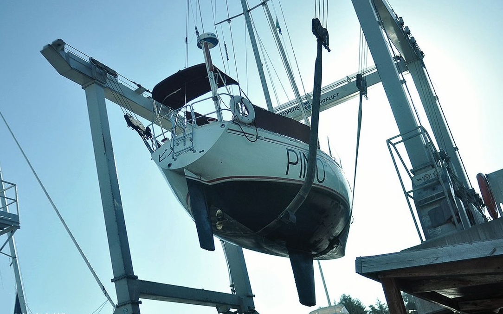
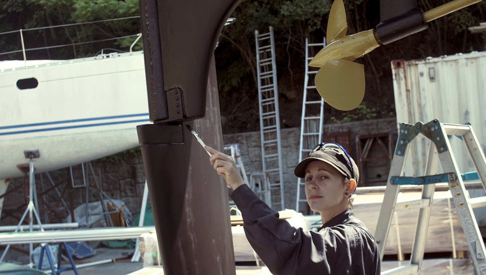
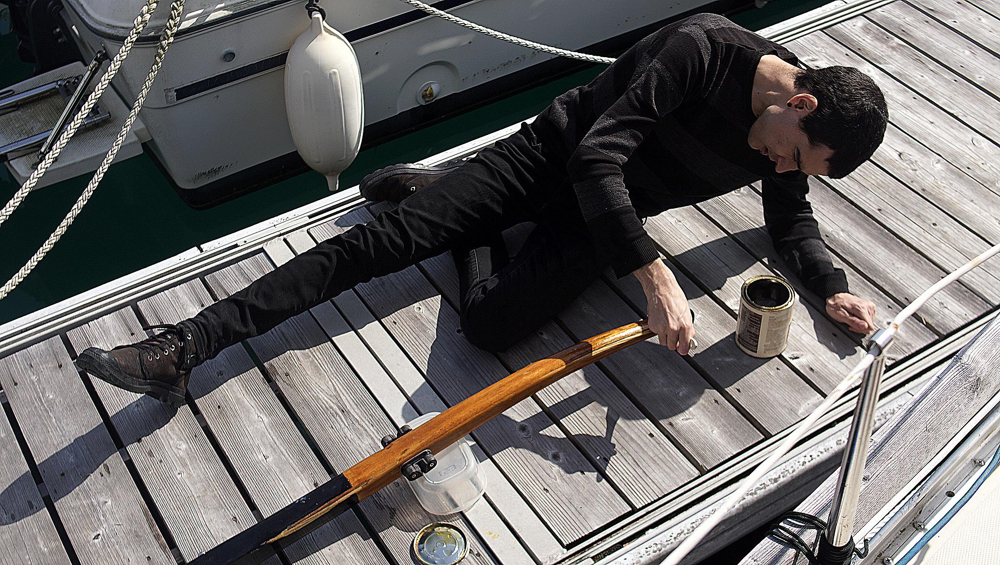

maintenance
Doing maintenance and repairs yourself will bring the cost down. Offloading work to professionals if you can afford it is fine, but it's good to know how to take care of your boat. You may not always have access to workers if sailing to far-flung islands.
A failure to maintain items regularly will cost more later. We recommend keeping a log of the repairs, part replacements that is done to your boat. Many parts have a limited lifespan, so knowing when they were replaced last will help prevent breakages. If leaving for a big sailing trip with spares, install the spare and keep the other one as the spare. If you do this, you'll learn how to change the part and what tools you need to do the job.
Maintenance checklist:
- Engine(s)
- The boat’s hull (bottom) & topsides, electrical systems
- Electrical systems
- Plumbing
- Moving parts (hinges, tracks and zippers)
- Canvas and upholstery
When doing repairs, use quality materials and products, research them thoroughly before a project instead of relying on brand names.
Some years will cost more than others as gear wears out.
Hauling-out costs
Tasks like hauling-out (to get the bottom painted) is once every 2-3 years for an offshore boat, but can be every year otherwise. How often you haul out depends on your personal preference.
Yard fees vary from place to place, those closer to large cities will cost more. In New Zealand, it cost us NZD$420 total, including bottom rinse, haul in and out and days to stay on the hard. While in Japan, it was about double that price for half the time.
When out of the water, don't forget to...
- Check your cutlass bearing (push up on the prop to see if there is any play, there shouldn't be).
- Grease the inside of your prop.
- Replace the shaft zincs.
- Replace or service your shaft seal. Dripless types need to be replaced out of the water, because it is necessary to undo the engine coupling to pull back the shaft to remove, and insert a new bellow.
- Check the hull for blisters.
Paint
Bottom paint: If we want to wait longer between haul-outs we paint 3 coats, otherwise 1 every year. We use ablative anti-fouling which costs about ~$250 to paint a 10 m yacht. Ablative wears out over time and when it does it will become less effective at repelling sea critters. Eventually, stripping the bottom of all paint down to the gelcoat is necessary, paint can build up and the older layers will start to flake off, making it difficult for new paint to adhere to the bottom.
Shaft, strut and prop: Coating your prop, shaft and strut with PropSpeed (see image below) works well to keep growth off, it works well in high-growth areas (we used it in New Zealand and Japan) but it is very expensive.
There is also the option of zinc paint. If your boat comes out of the water for a haul-out every year, a cheap alternative is to coat metal with zinc cream(penanten) or anhydrous lanolin (reported by others). Both products are available at the pharmacy. In June 2021 we tried zinc cream, we'll report back on our findings.
Offshore sailing costs
Traveling offshore means more wear because the boat is under more stress. Repair and maintenance can cost between $500-800 per year for a 10 m yacht like ours. This price goes up and down depending on where we go, and what has to be replaced that year. The size of the boat has a big influence on the cost of things. Larger boats need thicker hardware, rigging etc.
In 2018 while in new zealand, we spent around $10k on Pino (see projects and pain) to get it ready for japan and the subsequent trip across the north pacific ocean. This was the most we'd spent in a year and was due to the purchase of a new AIS system, mainsail, throttle cables, replacement windows, top hatch, galley plumbing, replacement batteries and solar panels. We did most of the work ourselves, all except for the mainsail. Our first year was also expensive, because the boat was not outfitted for sailing offshore, we had to buy life jackets, jacklines, a drogue, extra lines, shackles, a med-kit, extra tools, a location device, a handheld VHF, a SAT phone, foul-weather gear, engine spares etc. We wrote an offshore checklist to find out what you may need to buy.
Engine costs

Engines require spare parts like oil ($25) and fuel filters ($10), they should be replaced 250 hours (300 hours on some models) or once per year, whichever is sooner. Our engine has two fuel filters, a secondary and primary. Other items that need to be replaced periodically include: water pump impellers ($40), water pump and alternator belt (15-$20), zincs (inside engine, $8 each), coolant (if fresh water cooled) shaft zinc ($16 each) etc. Buying the official part for the engine will always cost more. Depending on the item, finding an equivalent from another maker is tricky. For an alternator belt, measure the outer an inner diameter, the width at the top and at the base and visit an automotive store.
See our resources for a list of helpful manuals on maintenance. Always carry the physical manual for your engine.
Wood upkeep costs
Most boats have teak rails or accessories, or marine plywood(interior). Teak does not rot, but it is a very expensive and an increasingly rare material. We don't recommend buying new exotic hardwoods, even if they last longer, because they often come from endangered forests. In all cases, using reclaimed hardwoods is the best thing to do. When boats are too old, they're stripped for parts and are a good source of used hard woods.
Most interior wood ought to be treated—especially marine plywood—so they don't absorb moisture. Marine ply is usually pre-treated to prevent the wood from rot and decay, but the wood still needs to be sealed. All boats suffer leaks eventually, and so it is necessary to take steps to protect the wood to make it last. If replacing a wall, coat the wood with multiple layers of epoxy(on the seam too) before applying multiple coats of varnish for UV protection.
A liter of resin can cost 30-40$, and harder is about 50-74$ per liter(although sizes tend to be much smaller. UV-resistant varnish can cost 40-80$ per liter, depending on the producer.